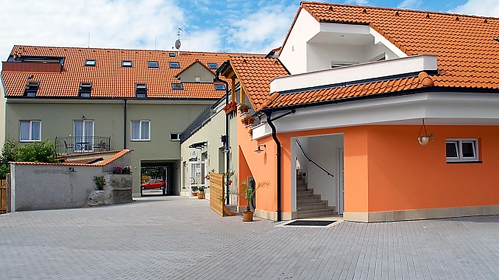
Fotogalerie
Restaurace, zahrádka, pokoje i areál penzionu. Klikněte na fotografii pro zvětšení.
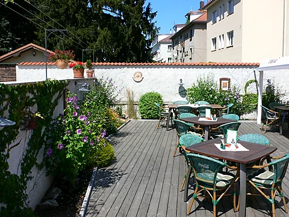
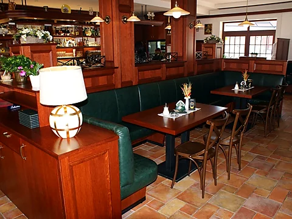
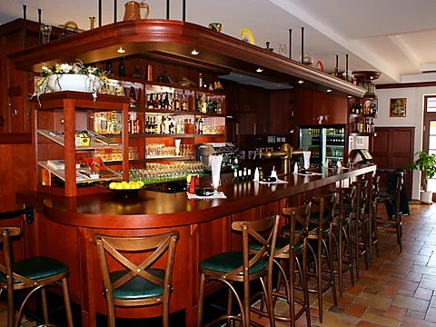
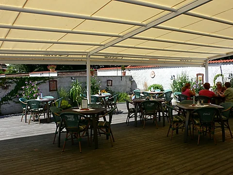
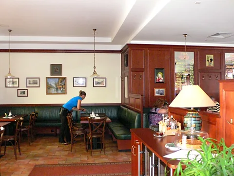
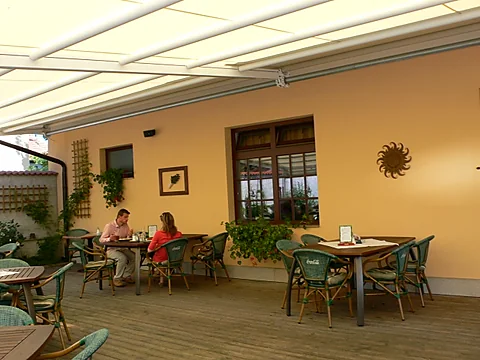
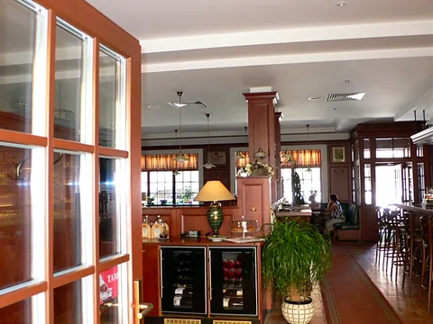
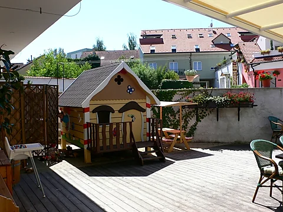
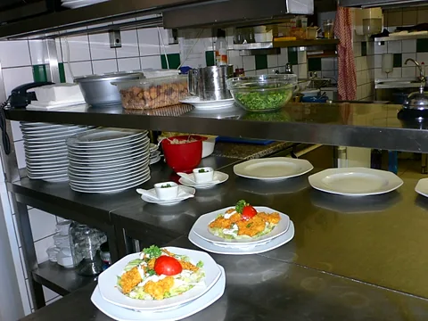
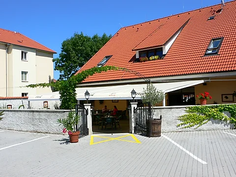


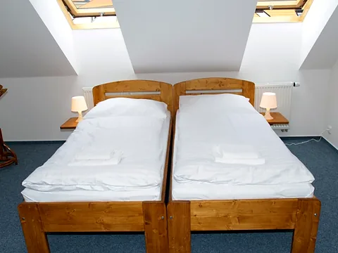


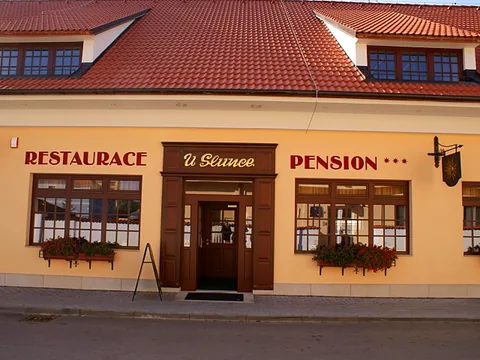
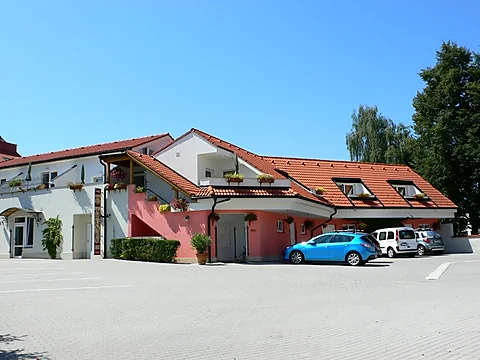
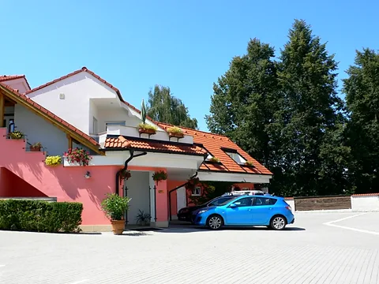
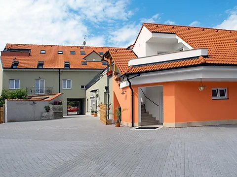
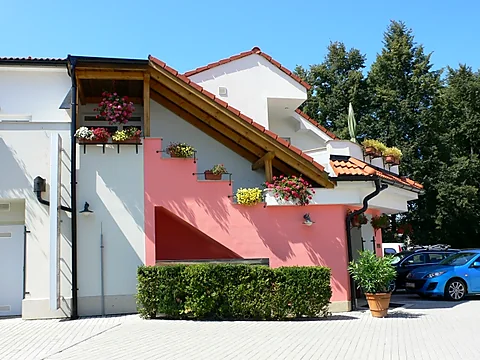
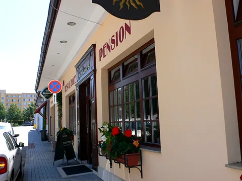
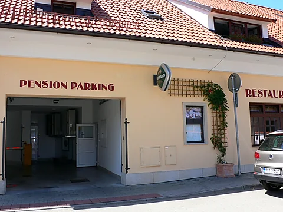
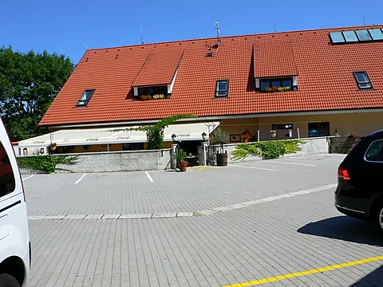
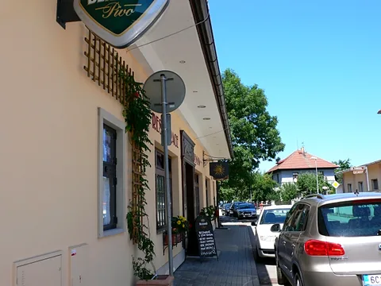
Líbí se vám u nás?
Rezervujte si stůl nebo pokoj telefonicky, těšíme se na vaši návštěvu.